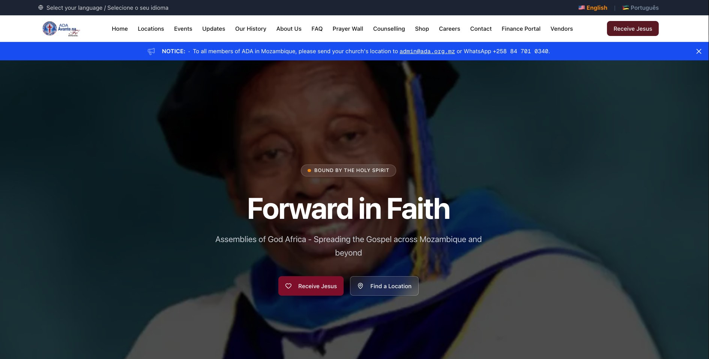
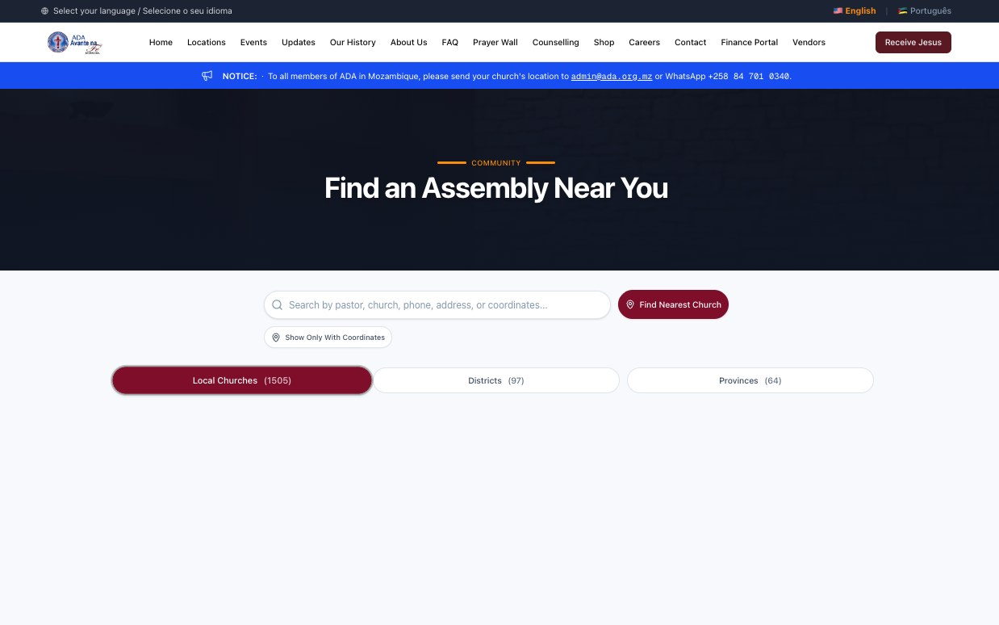
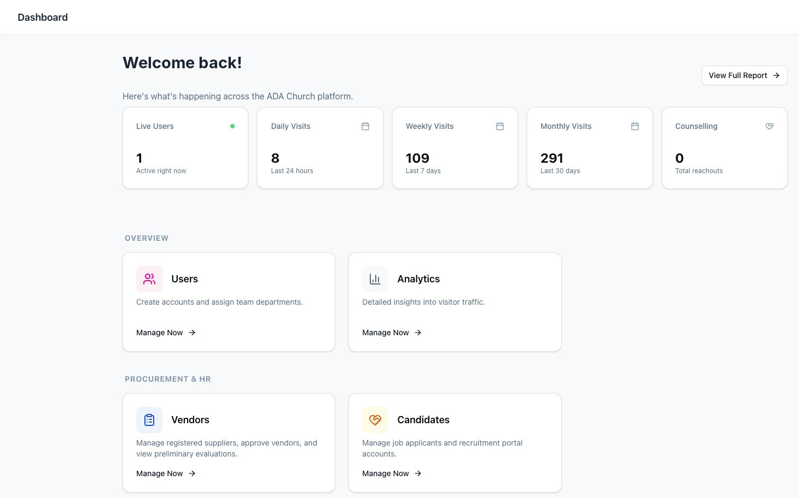
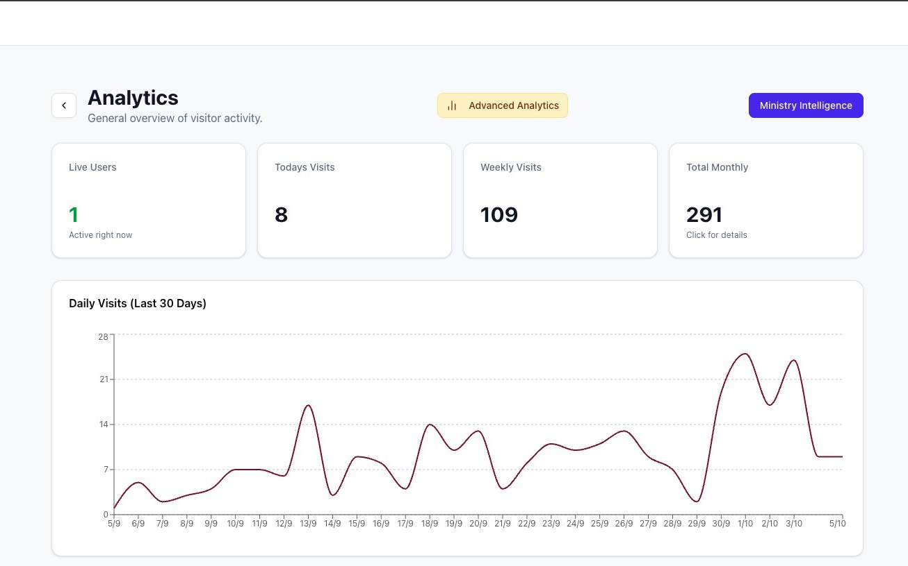
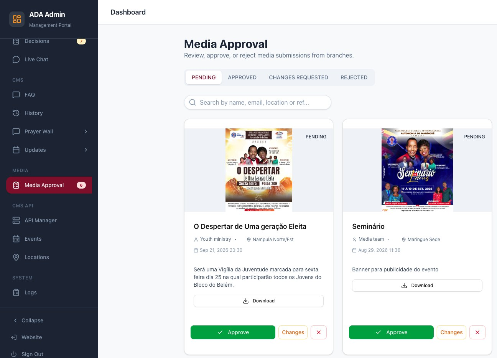
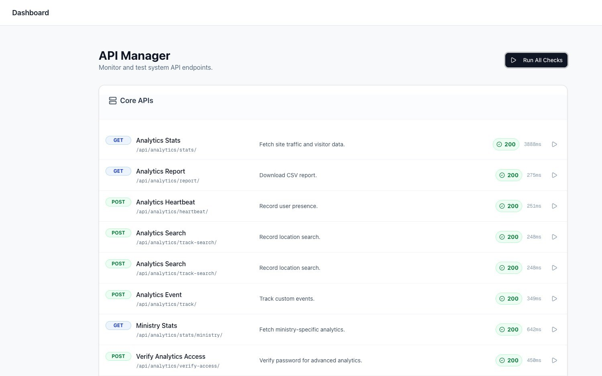

ADA
Not just a church website. A digital platform for a national denomination in Mozambique — thousands of assemblies across districts, a shop, recruitment, pastoral care and a full admin console, running on infrastructure I provisioned and maintain.
Live site: ada.org.mz — fully bilingual Portuguese and English, serving congregations across Mozambique.
The brief
A denomination this size runs on information that mostly lives in people's heads: which assemblies exist in which district, who leads them, how to reach them, what's happening this month, who has applied to serve, who has asked for prayer or called the helpline.
The organisation needed one system that members and the public could use, and that administrators could actually run — fully bilingual in Portuguese and English, on connections and devices that are not a fibre line and a new laptop.
What I built
Public and member-facing
Congregation directory
Districts and assemblies with leaders, contacts and coordinates, searchable and plotted on an interactive Leaflet map so someone can find the nearest congregation.
Shop & orders
Product listings, cart, checkout and order history — a full commerce path inside the same platform rather than bolted on elsewhere.
Accounts with OTP
Registration, login, one-time-password verification and password recovery, built for people whose most reliable channel is a phone number.
Careers & offers
Applications for roles, reviewed and progressed by administrators through to a formal offer, all tracked in-platform.
Prayer & helpline
Confidential prayer requests and helpline contacts routed to the right people, with the sensitivity that implies about who can read what.
Updates, FAQ, media
News and announcements with individual pages, a maintained FAQ, and a media library — all editable without a deploy.
The admin console
Fifteen or so areas covering the whole operation: users, candidates, messages, live chat, prayers, helpline, updates, FAQ, decisions, media and media approval, analytics, activity logs, history, API health and site configuration. The console is the actual product — the public site is what it renders.
A media approval queue rather than direct publishing. When contributors across many assemblies can upload, the question stops being "can they publish?" and becomes "who signed off on this appearing under the denomination's name?"
Screens
Public site


Admin console




Architecture
Four containers on one modest VPS, orchestrated with Docker Compose. The database and application server are never exposed to the internet; nginx terminates TLS and everything else talks over the internal network.
Internet
│ 443 / 80
▼
nginx TLS termination · static & media volumes
│ ▲
│ └── certbot Let's Encrypt renewal
┌───────┴────────┐
▼ ▼
frontend backend
Next.js Django + DRF
:3000 (internal) gunicorn :8000 (internal)
│ │
│ ▼
│ PostgreSQL 15 bound to 127.0.0.1 only
│
└── internal-api/proxy server-side fetch, domain allowlist
Django apps accounts · churchdata · shop · updates · content
prayers · helpline · chat · contact · faq · media
media_approval · analytics · activity_logs · history
The proxy layer
The browser never calls the API directly. Requests go to Next.js server routes which attach
credentials server-side and forward on — and the proxy validates the target against an explicit
domain allowlist before it will fetch anything, so a crafted url
parameter can't turn the server into an open relay. That same layer is what lets the platform
pull from the denomination's separate finance system without ever putting its token in a
browser.
The harder parts
Running a real stack on a small box
Both application containers carry explicit CPU and memory limits — half a core each, 512MB for Django, 1GB for Next.js — and the server needed a swap file provisioned before Next.js would build on it at all. Deploying to a constrained VPS is an exercise in knowing exactly what each process costs, which a managed platform lets you never learn.
Certificates that renew themselves
Certbot runs alongside nginx sharing the challenge and certificate volumes, so TLS renews without anyone remembering to do it. On a self-hosted stack an expired certificate is a total outage, and it happens on the day nobody is watching.
A deploy you can trust at speed
One scripted path: commit, push, pull on the server, rebuild the affected containers, run migrations, collect static, restart. Scripting it is what makes a fix at 11pm safe, because the risky step is never the code — it's the half-remembered command sequence.
Bilingual, not translated
The platform runs fully in Portuguese and English — over a thousand translated strings behind a language switcher, covering the public site and the admin console alike.
Retrofitting a second language is where most projects come unstuck: strings end up hardcoded in components, and the half nobody translated is always the half administrators use daily. Building the translation layer in from the start made the switch total rather than cosmetic — which matters for a denomination whose reach spans Lusophone Mozambique and English-speaking partners abroad.